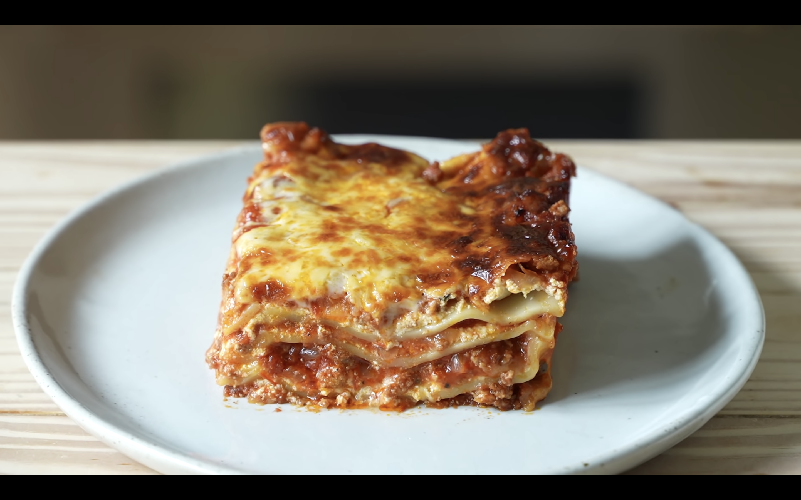

Lasagna

What is a Lasagna?
Lasagna is the name of one of the oldest and best-known pasta shapes. It is usually rectangular or ribbon shaped, thicker than tagliatelle, made from a dough based on flour and eggs, with numerous local variants. After being boiled, the rectangular lasagna noodles are drained and placed in layers with a filling that varies based on different local traditions.
Ingredients
Homemade Lasagna
- 300g All-purpose flour
- 2 Whole eggs
- 3 Egg yolks
- Touch of olive oil
Sauce
- 9 Lasagna noodles
- 450g Ground beef
- 340g Ground pork
- 30g Vegetable oil
- 1 Yellow onion, finelly diced
- 5 cloves garlic, thinly sliced
- 3g Finely chopped thyme
- 4g Fennel seeds, finely ground
- Salt and pepper to taste
- 1 Can crushed tomatoes
- 1 Can tomato paste
- Water if needed
Assembly
- 425g Tub ricotta
- 1 Egg
- 225g Mozzarella
- 1/3 Cup parmesan cheese
Steps
Homemade pasta method
- Add the flour to a large bowl. Create a well in the center of the flour.
- To the well, add in 3 egg yolks and 2 whole eggs. Whisk together using a fork.
- While whisking, slowly incorporate the flour into the eggs until a shaggy dough forms.
- Pour onto a work surface and begin kneading by hand until smooth.
- Wrap in plastic wrap and rest for 30 minutes.
- Divide the dough into 4 equal portions. Shape into an oval and roll it out just under ½-inch thick.
- Run through a pasta roller starting with the widest setting working towards the number 4 setting until the dough is ⅛-inch thick. Repeat with remaining pieces of dough.
- Cut to line-up with a 9x13 pan then cut in half lengthwise. Should have 10-12 sheets.
Sauce method
- In a dutch oven or heavy pot, heat the oil over medium-high heat until ripping hot.
- Add in the ground meat and sear for 3-4 minutes, flip and repeat on the other side for 2-3 minutes. Mash all the meat together using a potato masher until fine. Transfer to a separate container.
- Add more oil to the pot if needed, add in the finely sliced garlic, and reduce heat to medium. Stirring occasionally until the garlic begins to toast.
- Add in diced yellow onion, season to taste with salt stirring together, and saute until the onions turn translucent.
- Once the onions are translucent, add in fennel powder and stir together. Saute for 30 seconds.
- Add the tomato paste and stir together. Saute until it has caramelized and sticks to the bottom of the pan.
- Stir in a can of crushed tomatoes then add the meat back to the pot and stir until incorporated.
- Simmer and reduce for 5-7 minutes or until slightly thickened. Season to taste with salt and pepper.
Cheese mixture method
- In a medium bowl, mix together all ingredients until combined.
Assembly method
- Precook pasta noodles until al dente.
- Mix grated mozzarella and parmesan cheese in a small bowl.
- Preheat the oven to 375.
- In a 9x13 add 1 cup sauce, top with 3 noodles, layer 1/3 of cheese mix, another cup of meat sauce, repeat two more times, finish with 3 more noodles on top with more sauce on top and cheese.
- Cover with foil that’s been sprayed with oil, and bake for 25 minutes covered, uncover and bake for 25 more minutes.
- Cool for 15 minutes. Cut and serve.